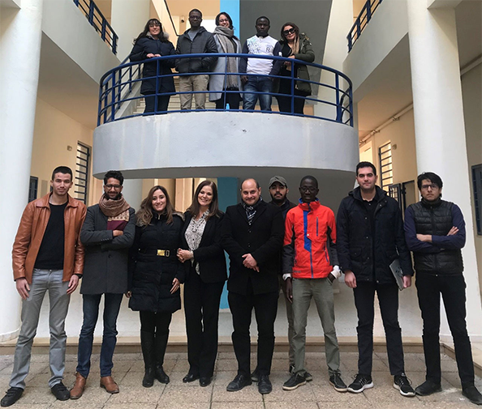

L'Université Franco-Tunisienne pour l'Afrique et la Méditerranée (UFTAM)
Mot de bienvenue !
L’Université Franco-Tunisienne pour l’Afrique et la Méditerranée (UFTAM) a ouvert ses portes à la rentrée 2019 pour offrir à des étudiants de l’Afrique Sub-saharienne autant qu’à des étudiants tunisiens, français ou méditerranéens un panel de formations d’excellence co-construites par de très grandes universités publiques françaises et tunisiennes.
Un hub d’enseignement supérieur
Annoncée conjointement par la Tunisie et la France lors de la visite officielle du Président Macron à Tunis en janvier 2018, l’UFTAM illustre la volonté des deux pays de constituer en Tunisie un hub régional d’enseignement supérieur, pour former les futures générations d’entrepreneurs et de cadres supérieurs et de salariés dont l’Afrique et l’espace méditerranéen ont besoin.